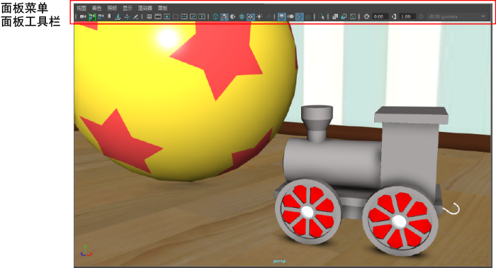

视图面板是用于查看场景中对象的区域。这既可以是单个视图面板（默认），也可以是多个视图面板，具体取决于所选的布局。可以单击左侧的快速布局按钮，轻松在单视图面板布局与四视图面板布局之间切换。
您可以在每个视图面板中拥有不同的摄影机，并逐面板设置不同的显示选项。例如，可在一个视图面板中以着色显示模式使用透视摄影机查看场景，并在另一个视图面板中以线框显示模式使用前正交摄影机查看场景。
还可以在视图面板中显示“UV 编辑器”(UV Editor)或“内容浏览器”(Content Browser)等其他编辑器，方法是从(Panels > Panel)菜单将其选中。
通过每个视图面板顶部的面板工具栏，可以访问位于工具栏上方的面板菜单中的许多常用命令。
显示或隐藏面板菜单
- 按 Shift+M 可启用或禁用面板菜单。

注： 面板工具栏(Panel Toolbar)将继续可见。通过按 Ctrl+Shift+M 键隐藏面板工具栏。

活动视图面板
活动视图面板是您单击的最后一个视图面板，其周围带有柔和高光。
若要确定播放期间更新的视图面板，请选择(Windows > Settings/Preferences > Preferences)，选择“时间滑块”(Time Slider)，然后将“更新视图”(Update view)设置为“活动”(Active)（播放期间仅更新活动视图面板）或“全部”(All)。